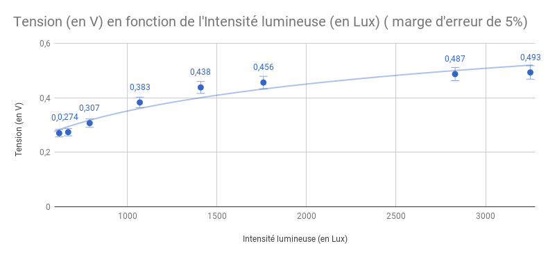

L'énergie solaire est maintenant très connue et de plus en plus utilisée. C'est une énergie renouvellable possédant un bon rendement (classique, mais efficace).
Nous allons chercher à utiliser un petit panneau solaire afin d'alimenter un objet connecté,
qu'il soit à l'intérieur ou à l'extérieur du batiment.
Le Capteur solaire permet de créer de l'énergie à partir d'une stimulation photonique d'une cellule photovoltaïque.
Nous allons chercher la résistance pour laquelle la puissance générée est maximale.
Tout d'abord, nous allons lister les tensions et les intensités mesurées avec différentes résistances, nous pourrons alors en faire des représentations graphiques.
Matériel:
x1 cellule solaire
x1 réostat
x1 ampèremètre
x1 voltmètre
x1 luxmètre
Nous avons pu alors faire ces relevés :
| Intensité (en mA) | Tension (en V) | Résistance (en Ω) |
|---|---|---|
| 0,065 | 34 | 100 |
| 0,426 | 32,8 | 90 |
| 0,471 | 31,8 | 87 |
| 0,55 | 27,4 | 85 |
| 0,585 | 24,2 | 80 |
| 0,614 | 17,3 | 70 |
| 0,626 | 13,2 | 60 |
| 0,630 | 10,6 | 50 |
| 0,634 | 8,9 | 40 |
| 0,636 | 7,7 | 30 |
| 0,638 | 6,7 | 20 |
| 0,639 | 6 | 10 |
| 0,64 | 5,4 | 0 |
Concernant l'instensité en fonction de la résistance, cela nous donne le graphique suivant :

On peut observer une augmentation progressive en fonction de la résistance
Par suite, pour la tension en fonction de la résistance, nous obtenons ceci :

On observe une diminution de la tension, ce qui est logique puisque U=RxI et que l'intensité augmente plus lentement que la résistance baisse.
Nous pouvons ensuite refaire le même tableau en ajoutant la colonne de puissance, qui s'obtient par la simple multiplication de l'intensité et de la tension. On obtient donc le tableau suivant :
| Puissance (en W) | Intensité (en mA) | Tension (en V) | Résistance (en Ω) |
|---|---|---|---|
| 0,00221 | 0,065 | 34 | 100 |
| 0,0139728 | 0,426 | 32,8 | 90 |
| 0,0149778 | 0,471 | 31,8 | 87 |
| 0,01507 | 0,55 | 27,4 | 85 |
| 0,014157 | 0,585 | 24,2 | 80 |
| 0,0106222 | 0,614 | 17,3 | 70 |
| 0,0082632 | 0,626 | 13,2 | 60 |
| 0,006678 | 0,630 | 10,6 | 50 |
| 0,0056426 | 0,634 | 8,9 | 40 |
| 0,0048972 | 0,636 | 7,7 | 30 |
| 0,0042746 | 0,638 | 6,7 | 20 |
| 0,003834 | 0,639 | 6 | 10 |
| 0,003456 | 0,64 | 5,4 | 0 |
On obtient donc un graphique représentant la puissance en fonction de la résistance que voici :

Cela nous montre que pour des performances optimales pour alimenter un objet connecté, nous devrons régler la résistance sur 85Ω. C'est ce que nous ferons dans la seconde expérience.
Nous allons maintenant chercher à caluler la puissance produite par la cellule en fonction du nombre de lux, nous allons évidemment placer une résistance de 85Ω dans le circuit pour obtenir des performances optimales. Nous allons mesurer dans un premier temps la luminosité, l'intensité et la tension, puis, dans un second temps, nous calculerons la puissance.
Matériel:
x1 cellule solaire
x1 réostat
x1 ampèremètre
x1 voltmètre
x1 luxmètre
Nous avons pu alors faire ces relevés :
| Tension (en V) | Intensité (en mA) | Intensité Lumineuse (en Lux) |
|---|---|---|
| 0,27 | 16,5 | 620 |
| 0,274 | 17 | 670 |
| 0,307 | 19,3 | 790 |
| 0,383 | 23,5 | 1070 |
| 0,438 | 26,8 | 1410 |
| 0,456 | 28,3 | 1760 |
| 0,487 | 30,3 | 2830 |
| 0,493 | 30,7 | 3250 |
On peut donc tracer la courbe représentant la fonction qui à toute intensité lumineuse L associe une tension :
On observe que la Tension augmente avec l'intensité lumineuse.
Ensuite, on peut tracer la courbe de la fonction qui à toute intensité lumineuse L associe une intensité :

De même que la tension, l'intensité du courant augmente proportionellement à l'intensité lumineuse.
Après calcul de la puissance, nous obtenons le tableau suivant :
| Tension (en V) | Intensité (en mA) | Intensité Lumineuse (en Lux) | Puissance (en W) |
|---|---|---|---|
| 0,27 | 16,5 | 620 | 4,455 |
| 0,274 | 17 | 670 | 4,658 |
| 0,307 | 19,3 | 790 | 5,9251 |
| 0,383 | 23,5 | 1070 | 9,0005 |
| 0,438 | 26,8 | 1410 | 11,7384 |
| 0,456 | 28,3 | 1760 | 12,9048 |
| 0,487 | 30,3 | 2830 | 14,7561 |
| 0,493 | 30,7 | 3250 | 15,1351 |
Nous pouvons alors tracer la courbe correspondant à la fonction qui à toute intensité lumineuse L associe une puissance P :

Le support solaire est un support sur lequel on peut placer et brancher un objet connecté afin qu'il se charge à l'aide d'un petit panneau solaire placé sur le support; Ce support serait placé en intérieur (ou en extérieur) et alimenterait l'objet avec la lumière de la pièce. il peut faire un usage personnel du moment qu'il se trouve dans une pièce avec une source de lumière suffisante (qu'elle soit naturelle ou artificielle).